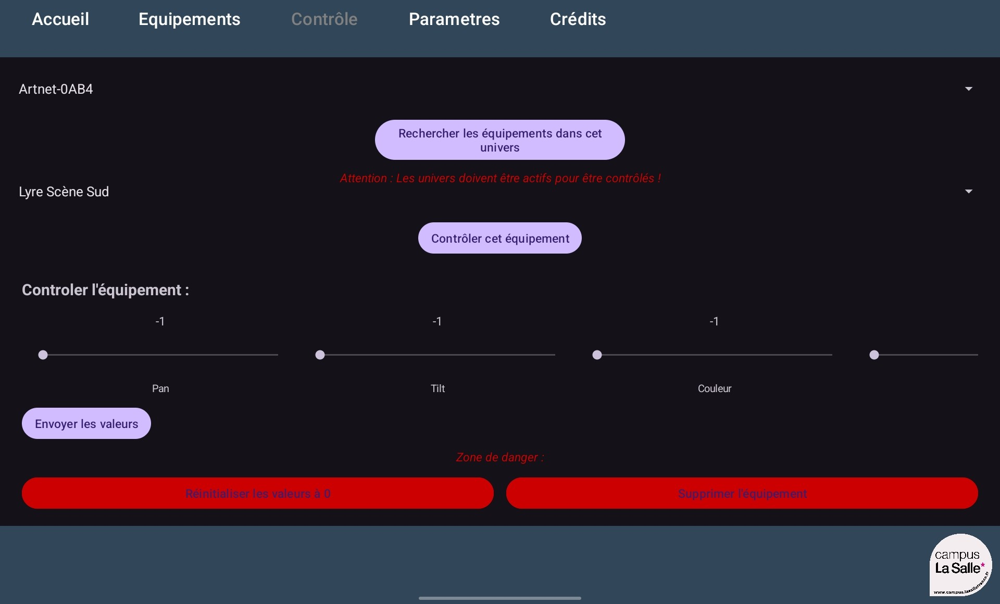

|
Projet Artnet
1.0
BTS CIEL IR LaSalle Avignon 2025
|
|
Projet Artnet
1.0
BTS CIEL IR LaSalle Avignon 2025
|


 Projet BTS CIEL 2025 : Artnet 2025
Projet BTS CIEL 2025 : Artnet 2025De nos jours, les DJ et animateurs de soirée utilisent couramment un ordinateur portable à la fois pour diffuser la musique et pour gérer les différents jeux de lumières pour éclairer et animer la piste de spectacle (danse, podium, scène, ...).
Nous souhaitons mettre en avant les possibilités offertes par notre système d’éclairage de scènes automatisé.
Il s’agit donc d’intégrer dans des univers DMX composés d’éléments tel que :
Objectif : réaliser un système de supervision et de commande de l’ensemble de ces appareils compatibles avec un bus standard du spectacle (DMX 512).
Le système est composé de :
La communication entre les modules est basée sur MQTT (Message Queuing Telemetry Transport). Le module Serveur héberge un broker MQTT.



Du 29 janvier au 28 mars
Du 29 mars au 23 mai
Du 24 mai au 30 mai
Module Serveur :

Module Application de commande :

Création d'un nouveau module :

Création et configuration d'une scène :
Activer une scène :

Module Serveur :

Module Application de commande :


cf. artnet.sql
Sur linux :
Exemple pour la phase de développement :
Les données enchangées en MQTT sont formatées en JSON.
Les modules Wifi-DMX envoient leur configuration sur le topic artnet/config :
Les modules de commande envoi les scènes sur le topic artnet/univers/[univers] :
| Désignation | Démarche à suivre | Résultat obtenu | Fonctionnel | Remarques |
|---|---|---|---|---|
| Gérer un broker | Sur la page “Broker MQTT”, vous pouvez ajouter, modifier ou supprimer un équipement. | Le broker et ajouter, modifier ou supprimer de la base de données. | Oui | |
| Tester un broker | Sur la page “Broker MQTT”, aller sur tester le broker. Puis choisissez le test que vous voulez. | Test la connectivité, la publication ainsi que la souscription et la réception du broker. | Oui | Le bouton “Souscrire”, souscrit uniquement au topic, rien d’autre. Le bouton “Recevoir” reçoit la publication d’un topic dans les 10s suivant le clic |
| Module DMX WiFi | Sur la page “Module DMX WiFi”. | Les différents modules s'affichent. | Oui | S’abonne au topic artnet/config pour recevoir les derniers modules. |
| Gérer un type d’équipement | Sur la page “Type d’équipement”, vous pouvez ajouter, modifier ou supprimer un équipement. | Le type d’équipement et ajouter, modifier ou supprimer de la base de données. | Oui | |
| Gérer un équipement DMX | Sur la page “Équipement DMX”, vous pouvez ajouter, modifier ou supprimer un équipement. | L’équipement et ajouter, modifier ou supprimer de la base de données. | Oui | |
| Commander un équipement DMX | Sur la page “Équipement DMX”, aller sur Commander. Changer les valeurs des sliders, puis envoyer. | L’équipement sélectionné à reçu les nouvelles valeurs des canaux, qui met à jour son état en conséquence. | Oui |
| Désignation | Démarche à suivre | Résultat obtenu | Fonctionnel | Remarques |
|---|---|---|---|---|
| Ajout d’un nouveau module | Démarrer l’application et attendre qu’un module connecté envoie un message | Apparition du module en cliquant sur le bouton “Actualiser la liste des modules” | Oui | |
| Création d’un équipement | Sur la page “Equipements”, entrer le nom, sélectionner l’univers, le type d’équipement, le nombre de canaux, l’adresse et optionnellement la définition des canaux | Nouvel équipement créé. | Oui | |
| Contrôle d’un équipement | Sélectionner un univers, puis un équipement, modifier la valeur des canaux puis appuyer sur le bouton “Envoyer les valeurs” | L’équipement sélectionné à reçu les nouvelles valeurs des canaux, qui met à jour son état en conséquence. | Oui | |
| Supprimer un équipement | Sur la page “Contrôle”, sélectionner l’univers puis l’équipement. Cliquer sur le bouton “Supprimer l’équipement” | L’équipement n’existe plus dans l’application. | Oui | |
| Réinitialiser à 0 l’équipement | Sélectionner un univers, puis un équipement, puis cliquer sur le bouton “Réinitialiser les valeurs à 0”. | L’équipement est éteint/retourné à sa position initiale. | Oui |
© 2025 LaSalle Avignon